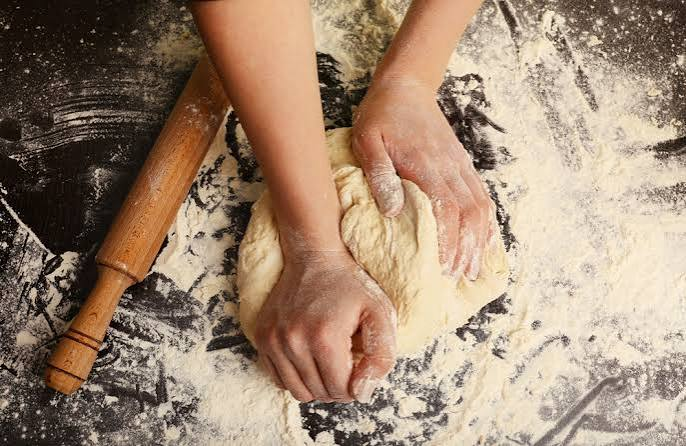
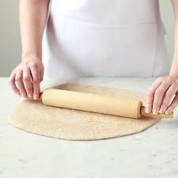
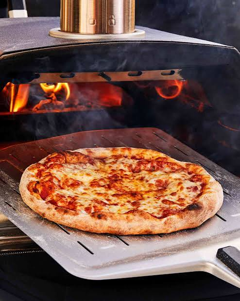

Pizza Recipe:
Here we can find all the ingredients necessary to prepare a simple pizza at home:
- 2 cups (260g) self-raising flour
- 1 cup (250g) plain Greek yogurt
- 1/2 cup tomato pizza sauce
- 1.5 cups (170g) shredded mozzarella cheese
- Optional favorites (pepperoni, mushrooms, fresh basil, or olive oil)
These are the steps that will be followed in order to make a simple pizza at home.
- Combine the dough ingredients: Combine sel-rising flour, Greek yogurt, fine sea salt,
baking powder and
extra virgin olive oil in a large mixing bowl. Mix with a spoon to combine until it looks like dough
crumbles. Use your hands to combine the dough crumbles into a ball.
- Knead: Lightly dust your work surface with flour, then tip the dough ball onto the surface
and knead for a
minute. If the dough is too sticky, at a teaspoon of flour at a time until it doesn’t stick to your hands
when you pull back. If the dough is too dry, add a teaspoon of water and continue kneading. Roll the dough
into a ball again. If you’d like to make two individual pizzas, simply divide the dough into two parts. Or
you can just leave it whole like I did here.

- Roll out the pizza dough: Flatten the dough ball and use a rolling pin to roll into either
a round or
rectangular shaped pizza crust. The thinner you roll it out, the crispier the crust will be. If you prefer a
more pillowy and softer pizza crust, don’t roll out the dough too thin.

- Bake: Bake for 15 minutes, or until the cheese has melted and starts to brown a little. (If
making two
smaller pizzas from the dough, you may only need to bake for 10-12 minutes.) Remove from oven and allow to
cool for 1-2 minutes before transferring to a cutting board.

- Serve!: Then slice and enjoy!
Home